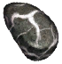

Камень Дрессировщика
Предметы / Обмен
Открыть в интерактивной вики →
| Вес | 50 |
|---|---|
| Цена | 0 |
Описание
Камень, который дрессировщик велел нам принести, если мы хотим, чтобы он дрессировал нам питомца.
Обмен 1х камень на 22к опыта питомцу.
Требуется для выполнения первого этапа квеста на ошейник.
Получить можно выполнив тренировку питомца у Дрессировщик Питер, а также во время ивентов.
Дрессировщик Питер, а также во время ивентов.
Обмен 1х камень на 22к опыта питомцу.
Требуется для выполнения первого этапа квеста на ошейник.
Получить можно выполнив тренировку питомца у
Дрессировщик Питер, а также во время ивентов.| Камень, который дрессировщик Питер велел тебе принести, если хочешь, чтобы твой питомец прошёл тренировку. |
Применение
|
Способы получения
|